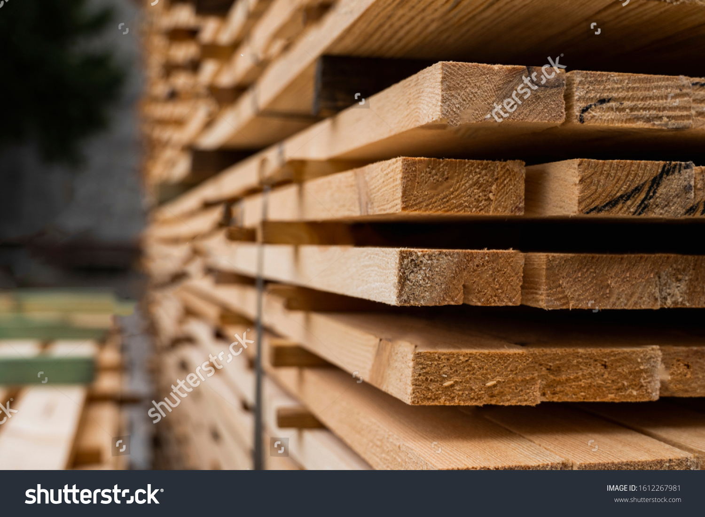
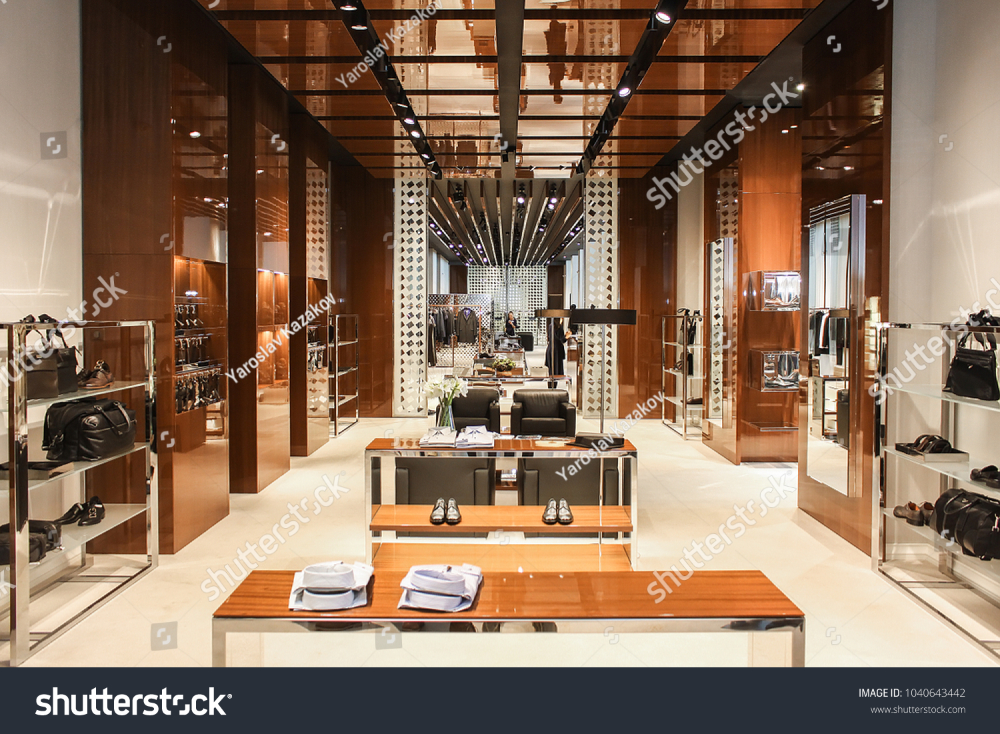
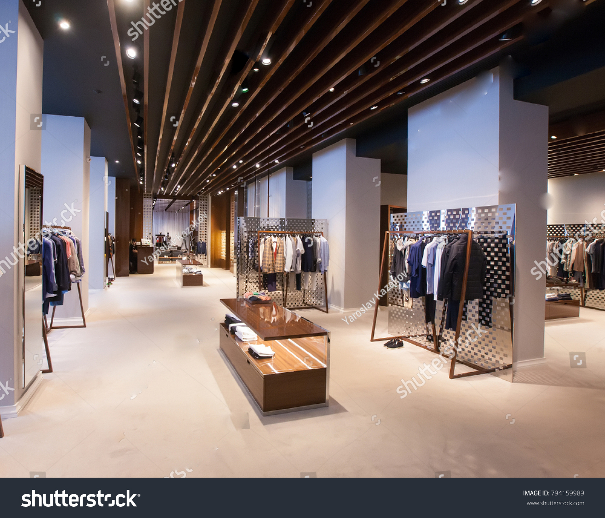
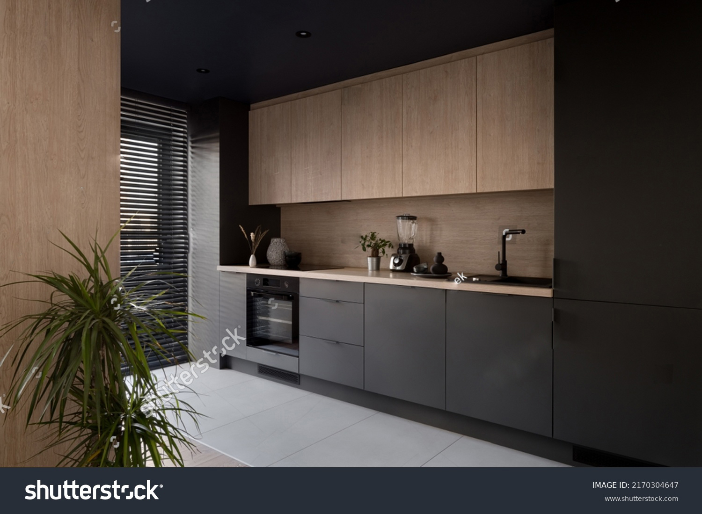
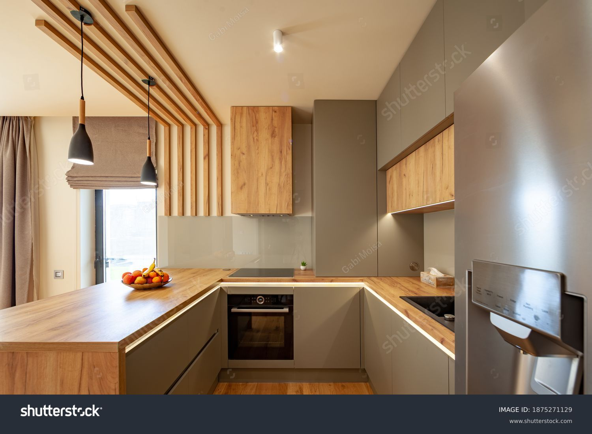
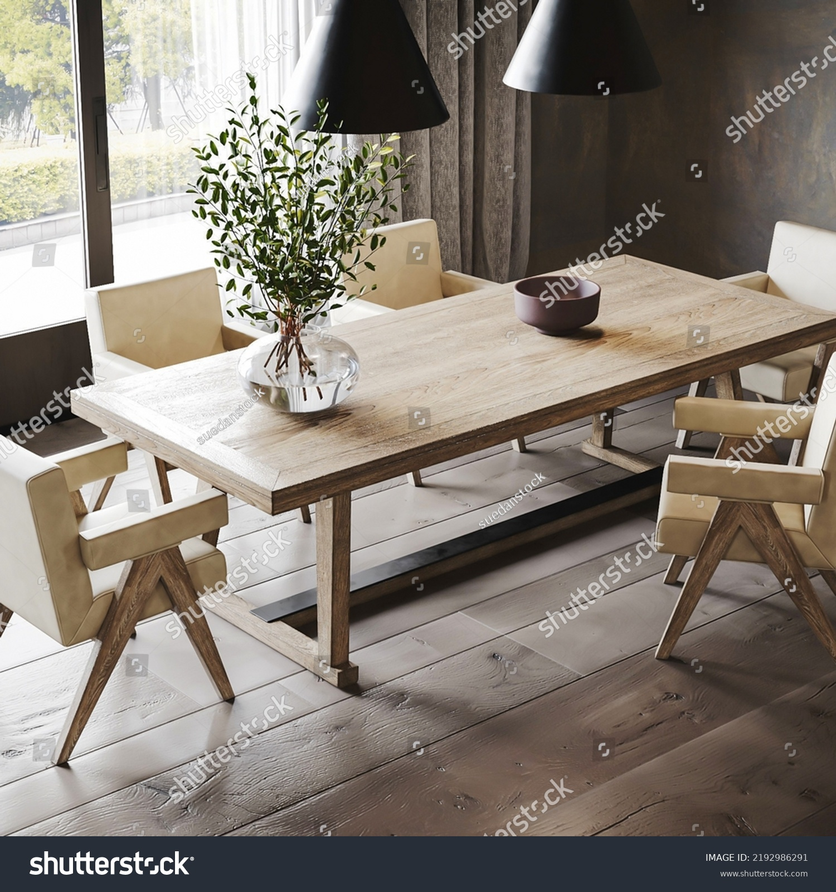

SERVICE
サービス

内装業者さま 工務店さま 店舗オーナーさま
設計からのAll In One 受託製作


ODM開発における最大の特徴は、 再現性を想定した開発が可能な点にあります。木の特徴を活かし、 一つ一つの部品を薄く細くさらに強くした商品への提案型開発を行います。また、極めて重たい部材同士の開閉などに用いる機構部材を、どのようにチョイスするかなど、豊富な経験と実績が欠かせません。 ODM開発における最大の特徴は、 再現性を想定した開発が可能な点にあります。木の特徴を活かし、 一つ一つの部品を薄く細くさらに強くした商品への提案型開発を行います。また、極めて重たい部材同士の開閉などに用いる機構部材を、どのようにチョイスするかなど、豊富な経験と実績が欠かせません。
業務内容
-
・木造作材加工
・建材カット・販売
・メラミンカット・販売
・NCマシーン加工 -
・木工造作家具製作
カウンター
棚
ベンチ
壁面収納

一般のお客さま
設計からのAll In One 受託製作


ODM開発における最大の特徴は、 再現性を想定した開発が可能な点にあります。木の特徴を活かし、 一つ一つの部品を薄く細くさらに強くした商品への提案型開発を行います。また、極めて重たい部材同士の開閉などに用いる機構部材を、どのようにチョイスするかなど、豊富な経験と実績が欠かせません。 ODM開発における最大の特徴は、 再現性を想定した開発が可能な点にあります。木の特徴を活かし、 一つ一つの部品を薄く細くさらに強くした商品への提案型開発を行います。また、極めて重たい部材同士の開閉などに用いる機構部材を、どのようにチョイスするかなど、豊富な経験と実績が欠かせません。
業務内容
-
・家具リノベーション
棚
テーブル -
・オーダー家具
ショーケース
テレビボード
棚
カウンター